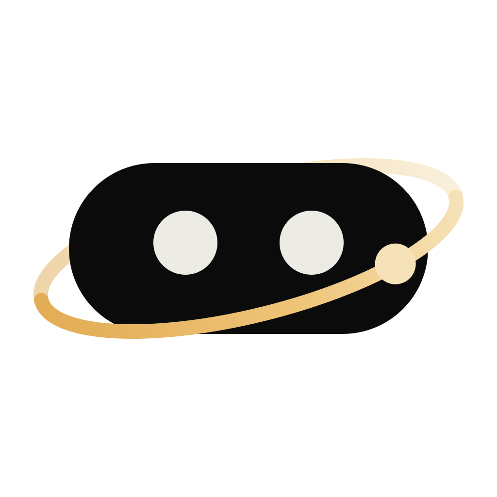
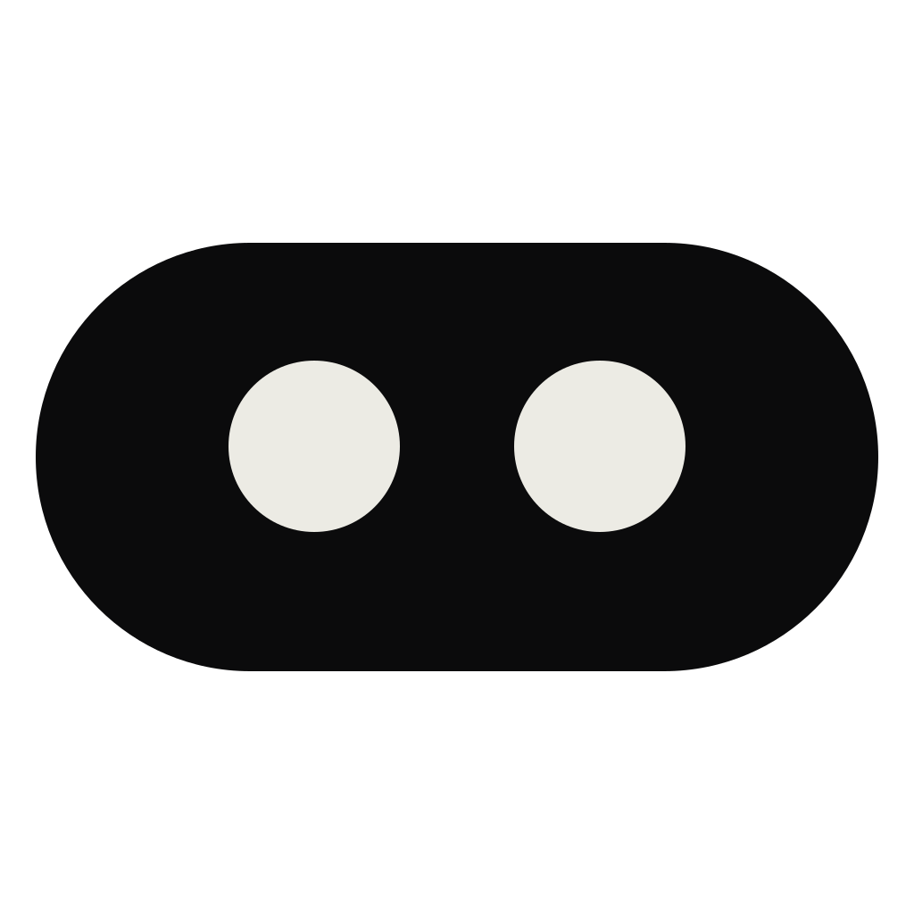

macOS app icon

primary mark · light

primary mark · dark
Primary mark: the face with its orbit. Small sizes: the face alone. Same brand, every size.
macOS app icon

primary mark · light
primary mark · dark
app icon · 128 / 64 / 32 / 16

OrbiOrbimenu bar · browser tabs
palette — from the landing page